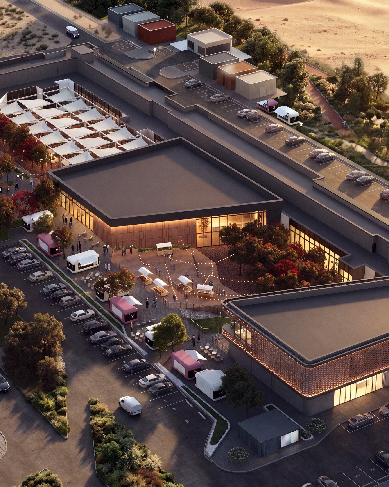
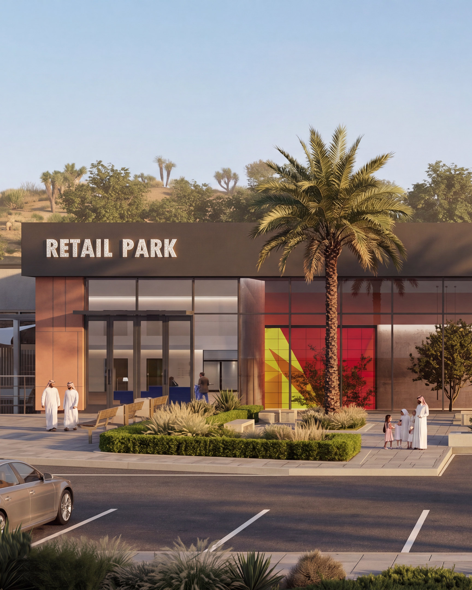
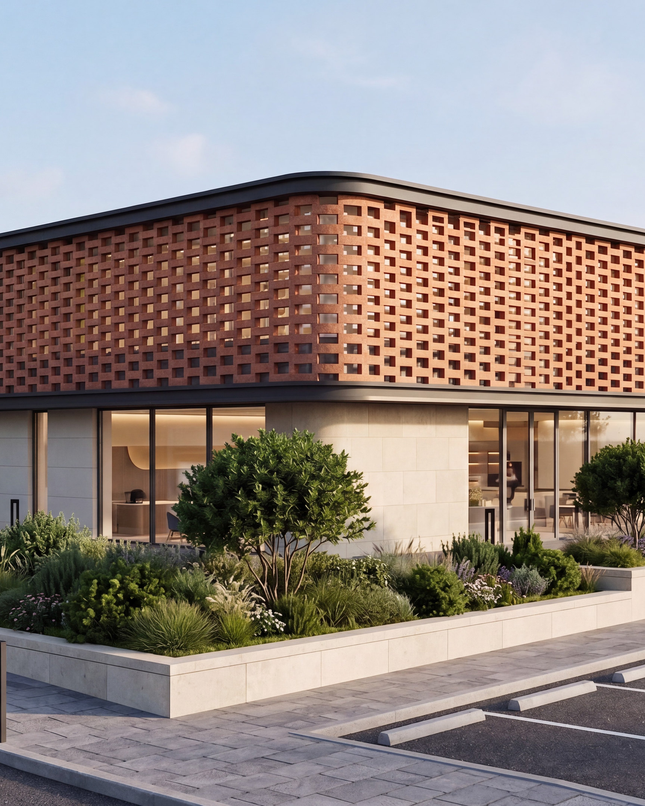
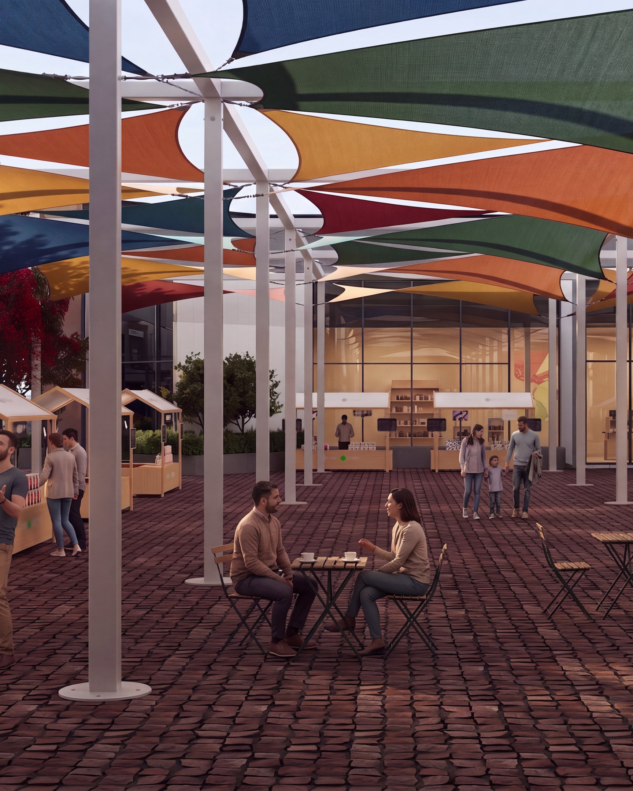
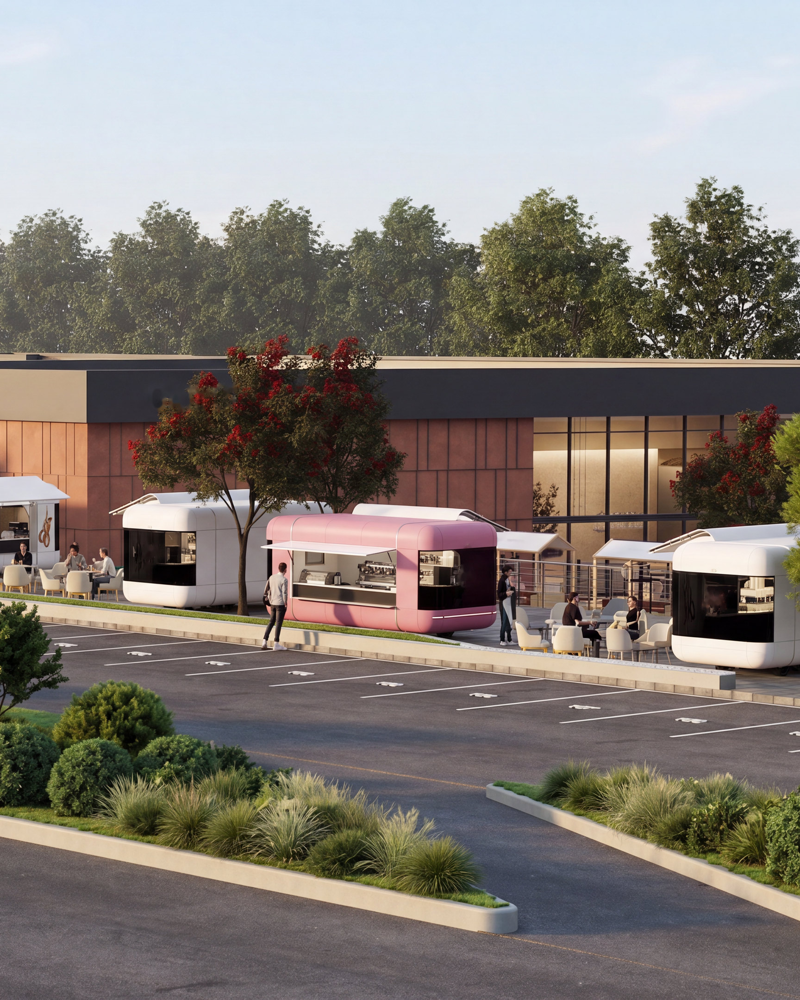
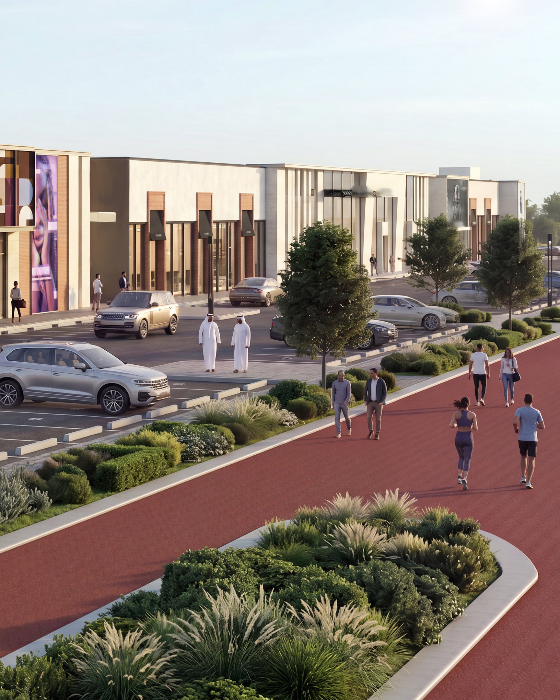
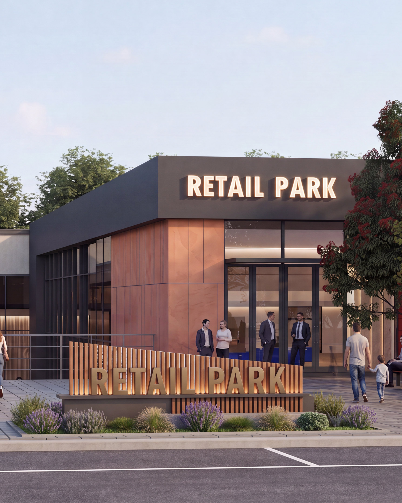
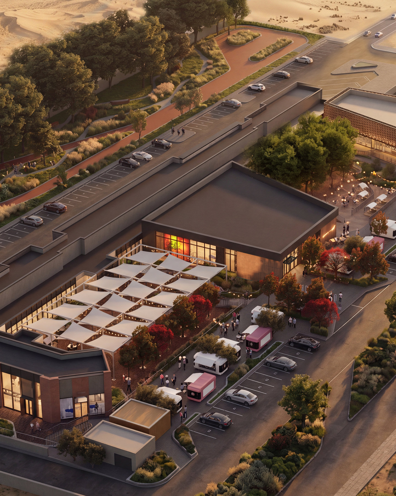

06:48first light
Retail Park
The sun comes in through the brick.
Retail Park is a low line of shops built around open-air courts. Its corner building wears a screen of square brick blocks. At first light the screen throws a grid across the room behind it, and the grid moves through the day.
Move the pointer. It is the sun. Drag sideways. It is the sun. Scroll, and the day passes.
08:05morning
A screen that filters the sun.
The corner building is wrapped in a perforated brick screen. It filters the sun by day and glows at night. Indoors, the same square blocks line the entrance atrium, the arcade and the walk beside the garden.
09:40mid morning
A low line of shops around open courts.
Retail Park is built around open-air courts instead of one enclosed mall. You arrive at a planted plaza under two date palms. Everything else is named on the ground, where it stands.
- Entrance and planted plaza
- Market court
- Central square
- Food trucks
- Retail strip
- Brick screen building
- Parking
- Running track
- Park
- Dunes
| Parking spaces | |
|---|---|
| Food and beverage units | |
| Running track | |
| Shade sails | |
| Food trucks | |
| Design | TCI Engineering Consultant |
| Interiors | TCI Interiors |
12:01noon
Noon, under the sails.
White fabric sails shade a market court of stalls and café tables. Outside, the ground is bright. Under the sails, it is not.
15:10afternoon
Food trucks along the central square.
The trucks park along the edge of the square. The strings of lights above it are for later.
16:55golden hour
A red track at the edge of the dunes.
The running track and a strip of park follow the edge of the dunes for the full length of the site. Late in the day the trees lay their shadows across it.
18:40night
The light turns round.
Day comes in through the brick. Night goes out through it. The square is strung with lights, the screen glows, and the lamp behind it is now yours to move.
Eight stills
From the design renders. Drag to see the rest.

01The site against the dunes 
02The entrance, under two date palms 
03The brick screen 
04The market court, under the sails 
05Food trucks along the central square 
06The running track and the park 
07The planted plaza 
08The site at dusk